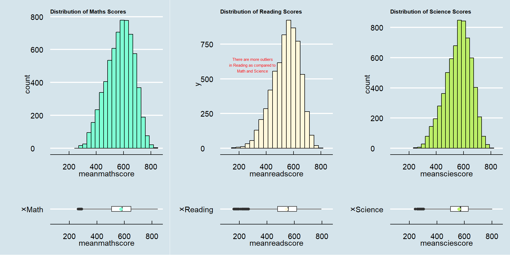

pacman::p_load(tidyverse, haven, ggplot2, ggrepel, patchwork, ggthemes, hrbrthemes, ggdist, ggridges, colorspace, gridExtra,cowplot)Take Home Ex 02: DataVis Makeover
Work-in-Progress
1 Background
In this take home exercise, we will:
select one of the Take-home Exercise 1 prepared by my classmate, Freddie Jr. Ngo Tan
critic the submission in terms of clarity and aesthetics,
prepare a sketch for the alternative design by using the data visualisation design principles and best practices we had learned in Lesson 1 and 2, and
remake the original design by using ggplot2, ggplot2 extensions and tidyverse packages.
1.1 Recap of Take Home Exercise 01
The aim of Take Home Exercise 01 was to use appropriate Exploratory Data Analysis (EDA) methods and ggplot2 functions to reveal:
the distribution of Singapore students’ performance in mathematics, reading, and science, and
the relationship between these performances with schools, gender and socioeconomic status of the students.
The dataset used was extracted from the “PISA 2022 database” which contains the full set of responses from individual students.
2 Data Preparation
2.1 Loading R Packages
In this take-home exercise, eleven R packages will be used. They are:
The code chunk used is as follows:
2.2 Importing PISA 2022 Data
The code chunk below uses the read_sas function from the haven package to import PISA data into R.
stu_qqq <- read_sas("data/stu_qqq.sas7bdat")We will next filter the observations to those from Singapore, using the filter function from the dpylr package.
stu_qqq_SG <- stu_qqq %>%
filter(CNT == "SGP")We will then save the file as a rds document in the data folder, using write_rds function. This reduces the file size from 3.9GB to 65.3MB, which makes it easier to push to Github subsequently.
write_rds(stu_qqq_SG, "data/stu_qqq_SG.rds")We will now import the file back into the R enviroment using the read_rds function.
stu_qqq_SG <- read_rds("data/stu_qqq_SG.rds")
Warning
Remember to:
delete the 3.9GB source file from the data folder; and
include “#| eval: false” into the first three code chunks of this section.
3 Critique in terms of Clarity and Aesthetics
3.1 Original Plot of Students’ Performance Distribution
The first requirement for Take-Home_Ex02 was to show the distribution of Singapore students’ performance in mathematics, reading, and science. Freddie made use of boxplots to illustrate the distribution of the scores as shown below. The boxplots for each of the subjects were segregated into different tabs, and the code chunk was “hidden” from the audience’s view unless the user clicks on “Show the code”.

3.1.1 Positive Areas
The three box plots were clear and simple. It gave me (as audience) a clear view of the min-max distribution, interquartile range, median and outliers. The code chunk was also hidden so that it does not clutter the interface.
3.1.2 Areas for Improvement
Just from the boxplots that were displayed one at a time, it was difficult for me to comprehend what the graphs were trying to tell me. I would propose adding a histogram to supplement the boxplots to give a better visualisation to the audience on what the distributions look like. In addition, there are also merits to combine all three graphs on a single output, so that the audience can have an overview at one glance, instead of having to navigate through different tabs to compare the similarities and differences between the three subjects. Lastly, it will be useful to add annotations to the graphs to highlight the key points of the three graphs.
3.1.2.1 Sketch
3.1.3 Re-Modelled Distribution

Tip
Do align the x-axis of both histograms and boxplots so that the distributions are mapped correctly.
meanmathscore = rowMeans(select(stu_qqq_SG, PV1MATH : PV10MATH))
stu_qqq_SG$meanmathscore <- meanmathscore
h1 <- ggplot(data = stu_qqq_SG,
aes(x = meanmathscore)) +
geom_histogram(bins=20,
boundary = 850,
color="black",
fill="aquamarine") +
coord_cartesian(xlim=c(100,850)) +
ggtitle("Distribution of Maths Scores") +
theme_economist() & theme(plot.title = element_text(size = 8))
b1 <- ggplot(data = stu_qqq_SG,
aes (x = "Math", y = meanmathscore))+
geom_boxplot(width=0.2, notch=TRUE)+
stat_summary(geom = "point", fun.y= "mean", colour ="aquamarine", size=2)+
scale_y_continuous(limits = c(60,880), expand = c(0,0), breaks = seq(200, 800, by = 200))+
coord_flip() +
theme_economist() & theme(plot.title = element_text(size = 8))
meanreadscore = rowMeans(select(stu_qqq_SG, PV1READ : PV10READ))
stu_qqq_SG$meanreadscore = meanreadscore
h2 <- ggplot(data = stu_qqq_SG,
aes(x = meanreadscore)) +
geom_histogram(bins=20,
boundary = 850,
color="black",
fill="cornsilk") +
coord_cartesian(xlim=c(100,850)) +
annotate("text",
x=300,
y=600,
color = "red",
label = "There are more outliers\nin Reading as compared to\nMath and Science", size = 2) +
ggtitle("Distribution of Reading Scores") +
theme_economist() & theme(plot.title = element_text(size = 8))
b2 <- ggplot(data = stu_qqq_SG,
aes (x = "Reading", y = meanreadscore))+
geom_boxplot(width=0.2, notch=TRUE)+
stat_summary(geom = "point", fun.y= "mean", colour ="cornsilk", size=2)+
scale_y_continuous(limits = c(60,880), expand = c(0,0), breaks = seq(200, 800, by = 200))+
coord_flip() +
theme_economist() & theme(plot.title = element_text(size = 8))
meansciescore = rowMeans(select(stu_qqq_SG, PV1SCIE : PV10SCIE))
stu_qqq_SG$meansciescore = meansciescore
h3 <- ggplot(data = stu_qqq_SG,
aes(x = meansciescore)) +
geom_histogram(bins=20,
boundary = 850,
color="black",
fill="darkolivegreen2") +
coord_cartesian(xlim=c(100,850)) +
ggtitle("Distribution of Science Scores") +
theme_economist() & theme(plot.title = element_text(size = 8))
b3 <- ggplot(data = stu_qqq_SG,
aes (x = "Science", y = meansciescore))+
geom_boxplot(width=0.2, position = "dodge")+
stat_summary(geom = "point", fun.y= "mean", colour ="darkolivegreen2", size=2)+
scale_y_continuous(limits = c(60,880), expand = c(0,0), breaks = seq(200, 800, by = 200)) +
coord_flip() +
theme_economist() & theme(plot.title = element_text(size = 8))
plot_grid(h1, h2, h3, b1, b2, b3, ncol=3,align="v",rel_heights=c(4,1.5),axis = 'lr')3.2 Original Plot of Students’ Performance by Gender
The second requirement for Take-Home_Ex02 was to examine the relationship between Singapore students’ performances with schools, gender and socioeconomic status of the students. Similarly, Freddie made use of boxplots to illustrate the distribution of the scores by gender as shown below. The boxplots for each of the subjects were segregated into different tabs, and the code chunk was “hidden” from the audience’s view unless the user clicks on “Show the code”.
3.2.1 Positive Areas
On top of those positive areas described above in 3.1.1 Positive Areas, a side-by-side comparison between the two genders allowed the audience to have a better visualisation of how male students performed against female students.
3.2.2 Areas for Improvement
Similar to the points mentioned in 3.1.2 Areas for Improvement, it was difficult for me to comprehend what the boxplots were trying to tell me. I would propose adding a rainplot to supplement the boxplots to give a better visualisation to the audience on how the distributions differ from each other. In addition, combining all three graphs on a single output allows the audience to have a bird’s eye view instead of having to navigate through different tabs to compare the similarities and differences between the three subjects. Lastly, it will be useful to add annotations to the graphs to highlight the key points of the three graphs.
3.2.2.1 Sketch of Alternative Design
3.2.3 Re-Modelled Distribution
stu_qqq_SG$ST004D01T <- replace(stu_qqq_SG$ST004D01T, stu_qqq_SG$ST004D01T == 1, "Female")
stu_qqq_SG$ST004D01T <- replace(stu_qqq_SG$ST004D01T, stu_qqq_SG$ST004D01T == 2, "Male")
g1 <- ggplot(stu_qqq_SG,
aes(x = ST004D01T,
y = meanmathscore)) +
labs(title = "Distribution of Math Scores by Gender", x = "Gender", y = "Mean Math Score") +
stat_halfeye(adjust = 0.5,
justification = -0.1,
.width = 0,
scale = .8,
point_colour = NA,
slab_fill = "aquamarine") +
annotate(geom = "text",
x=2.8,
y=720,
label = "Male students recorded peak frequency\nat higher Math score",
color = "red",
size = 2) +
geom_boxplot(width = .2,
outlier.shape = NA) +
stat_dots(side = "left",
justification = 1.05,
binwidth = 4,
dotsize = .5) +
scale_y_continuous(limits = c(250,850), expand = c(0,0), breaks = seq(200, 800, by = 200)) +
coord_flip() +
theme_economist()
g2 <- ggplot(stu_qqq_SG,
aes(x = ST004D01T,
y = meanreadscore)) +
labs(title = "Distribution of Reading Scores by Gender", x = "Gender", y = "Mean Reading Score") +
stat_halfeye(adjust = 0.5,
justification = -0.1,
.width = 0,
scale = .8,
point_colour = NA,
slab_fill = "cornsilk") +
annotate(geom = "text",
x=2.8,
y=680,
label = "Female and Male students recorded peak frequency\nat similar Reading score",
color = "red",
size = 2) +
geom_boxplot(width = .2,
outlier.shape = NA) +
stat_dots(side = "left",
justification = 1.05,
binwidth = 4,
dotsize = .5) +
scale_y_continuous(limits = c(250,850), expand = c(0,0), breaks = seq(200, 800, by = 200)) +
coord_flip() +
theme_economist()
g3 <- ggplot(stu_qqq_SG,
aes(x = ST004D01T,
y = meansciescore)) +
labs(title = "Distribution of Science Scores by Gender", x = "Gender", y = "Mean Science Score") +
stat_halfeye(adjust = 0.5,
justification = -0.1,
.width = 0,
scale = .8,
point_colour = NA,
slab_fill = "darkolivegreen2") +
annotate(geom = "text",
x=2.8,
y=700,
label = "Male students recorded peak frequency\nat higher Science score",
color = "red",
size = 2) +
geom_boxplot(width = .2,
outlier.shape = NA) +
stat_dots(side = "left",
justification = 1.05,
binwidth = 4,
dotsize = .5) +
scale_y_continuous(limits = c(250,850), expand = c(0,0), breaks = seq(200, 800, by = 200)) +
coord_flip() +
theme_economist()
grid.arrange(g1, g2, g3)4 Learning Points
This exercise mandated students to critique and makeover the visualisation works of the peers, which helped to embed good practices in data visualization. Through this exercise, students would need to go through the works of their peers, and in so doing, understand how to improve their own visualisation and the common pitfalls to avoid. To summarise, the key learning points are:
Begin with the business question in mind. It is important to find out the aim and purpose of the visualization. Only then, can students start designing an appropriate visualization tool to aid decision making.
There is no perfect visualisation, as we will always be foreced to make trade-offs between clarity and aesthetics. As we aspire to build clear and beautiful visualisations, a useful tip provided by Prof Kam will be to provide an “overview first, zoom and filter, then details-on-demand”.